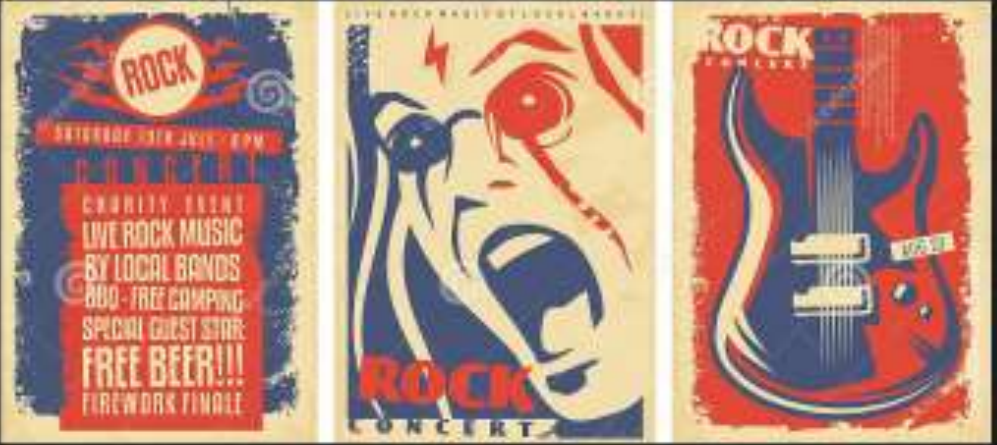

Rock es un término amplio que agrupa una variedad de estilos de músicapopularcoriginados como rock
and roll a principios de la década de 1950 en Estados Unidos y que evolucionó en un gran rango de
diferentes estilos en los años 1960, particularmente en ese país y Reino Unido.
Tiene sus raíces en el rock and roll de los años 50s, proveniente de la combinación de géneros
anterios como el blues, rhythm and blues y el country. La música clásica y otras fuentes. El rock se
ha centrado en la guitarra eléctrica, normalmente como parte de un grupo integrado por cantante,
batería, bajo y, algunas veces, instrumentos de tecladocomo el órgano y el piano. Usualmente, el rock
se centra en las canciones, habitualmente de compás de 4/4 y una estructura verso-estribillo; sin
embargo, el género se ha vuelto extremadamentediverso y las caraterísticas musicales comunes son
difíciles de definir. Como la música pop, las letras se centran a menudo en el amor romántico, pero
también tratan un rango amplio de otros temas con un enfoque frecuente en los social, lo personal y lo
político.

|
|